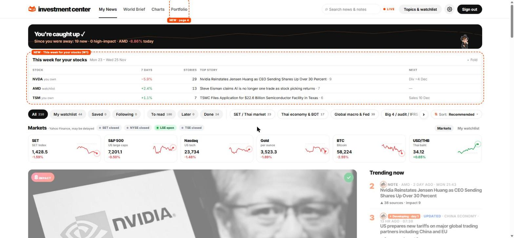
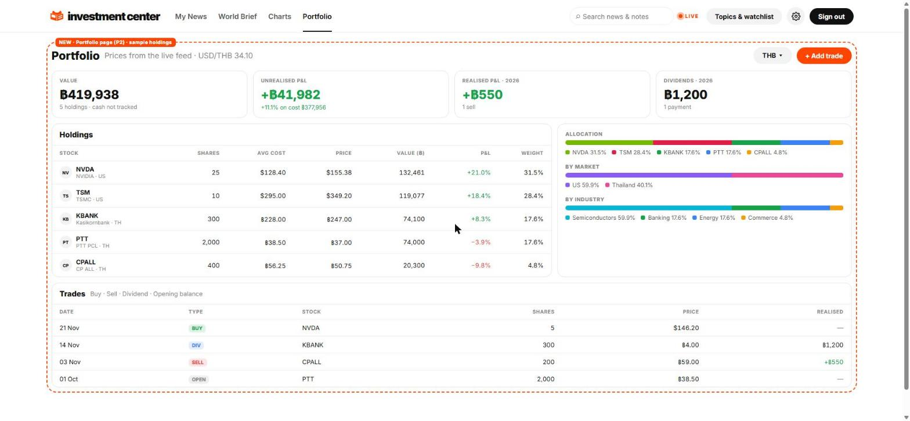
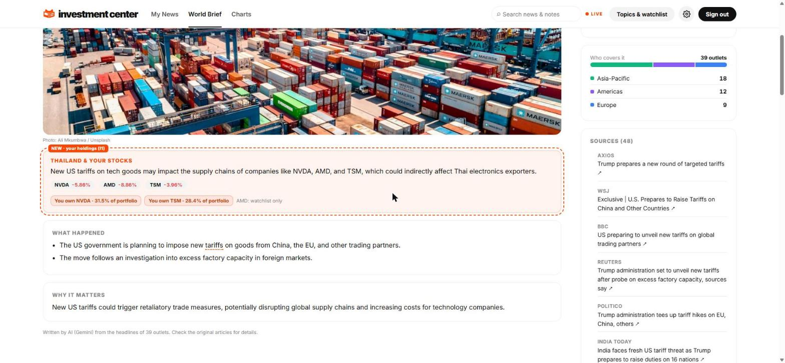
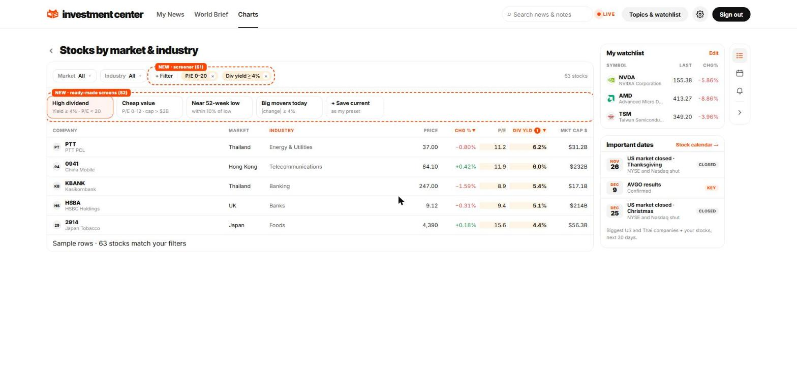

Real screenshots of your site on localhost (light "crisp" theme). The new parts were added to the page only for the screenshot and are marked with an orange dashed outline + NEW label. Stock names, story headlines and story counts are real. Holdings, P&L, P/E, yields and the 7-day moves are sample numbers.
The card sits right under the "You're caught up" bar, above the filter row. It folds away like the briefing card. The story counts and top headlines are real (last 3 days, your watchlist NVDA / AMD / TSM). "Portfolio" becomes the 4th link in the top bar.

Full width, same frame as Charts. Top: 4 number tiles. Middle: holdings table + allocation bars (by stock, market, industry). Bottom: the trade ledger. "+ Add trade" opens the window from round 49 (Buy / Sell / Dividend / Opening).
On phone: the bottom tab bar already has 6 buttons, so Portfolio would go inside the Charts tab as a link instead of a 7th button.

Inside the existing "Thailand & your stocks" box, under the price chips. Badges appear only for stocks you own. Watchlist-only stocks get a small grey note.

"+ Filter" joins the Market / Industry dropdowns, and active filters show as amber tokens. The preset cards sit between the filter bar and the table. Columns for active filters (P/E, Div yield) are added and lightly tinted.
